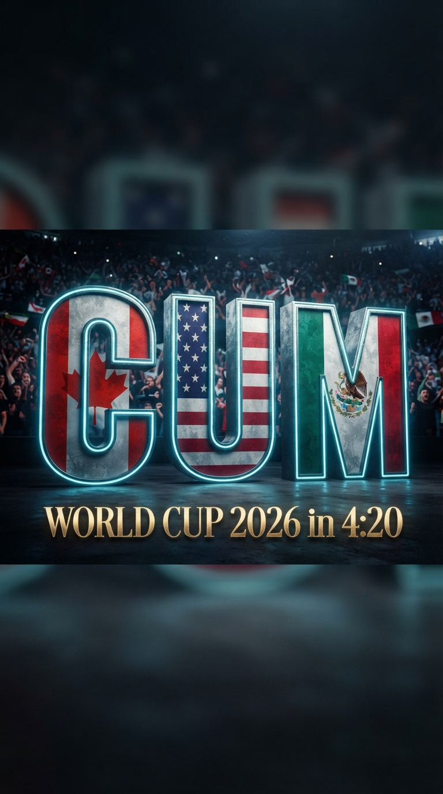
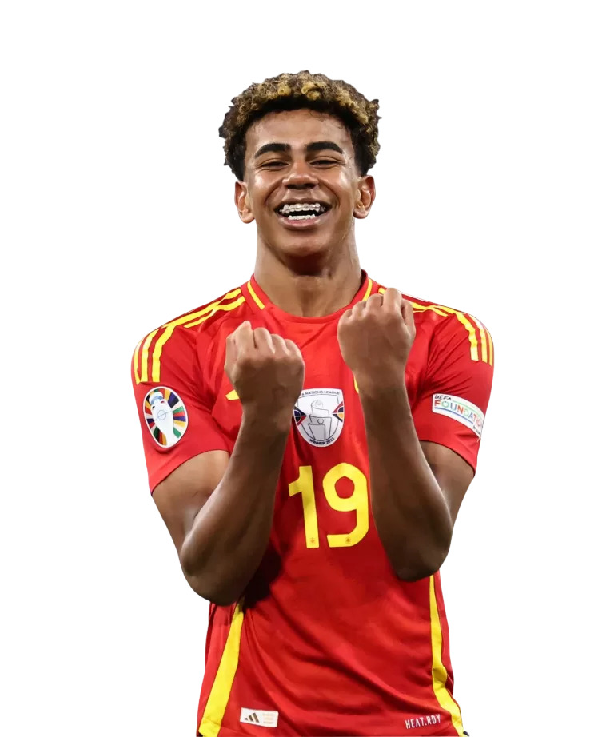
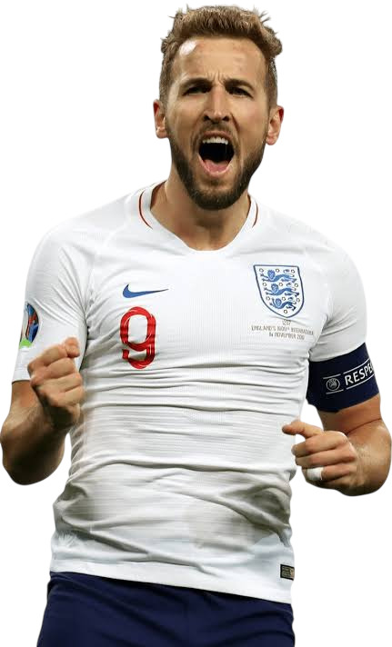
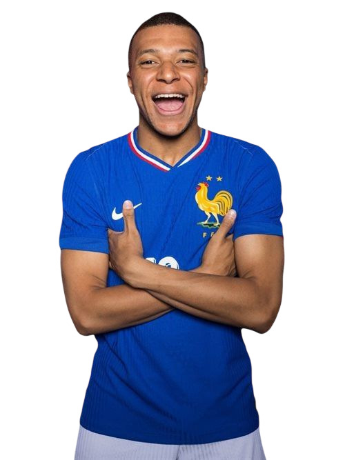
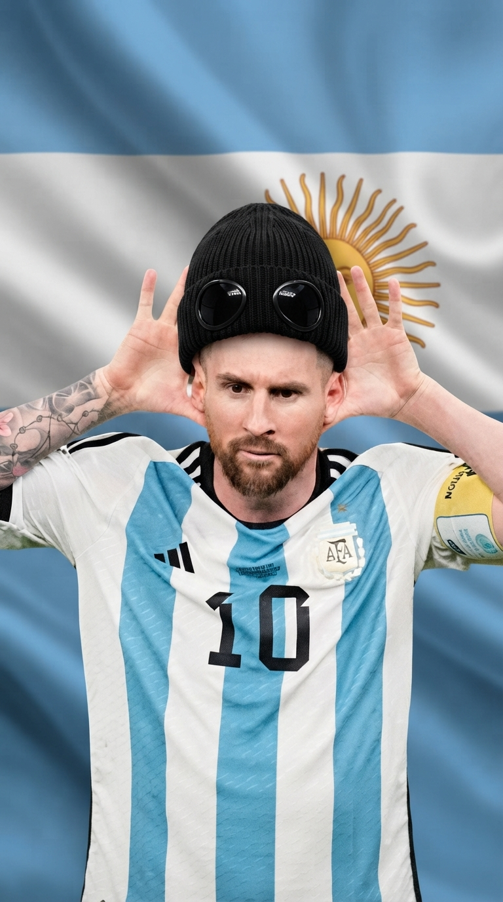
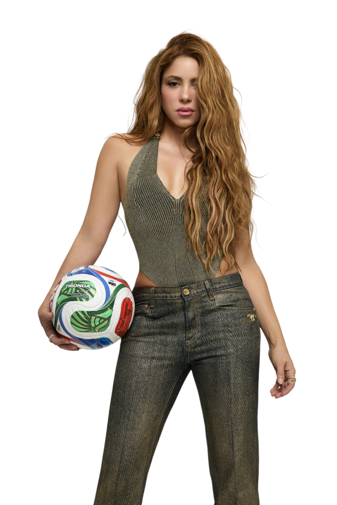
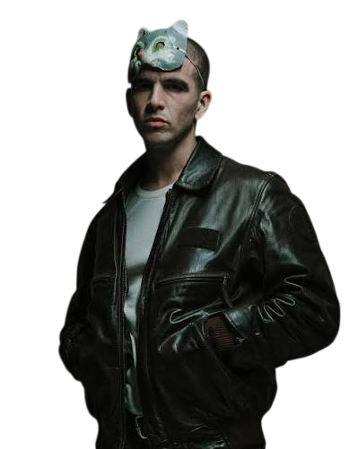

Тайное убежище для истинных ценителей футбола
Чемпионат Мира 2026Gastro-Bar 4:20 — это не просто бар. Это тайное убежище, двери которого открываются далеко не для каждого. Адреса вы не найдёте нигде — сюда попадают лишь избранные, знающие пароль футбольного братства.
Мы живём по календарю большого футбола и открываемся только в дни настоящих сражений:
Каждую весну — с 1/8 финала и до самого финала.
Раз в 4 года — с 1/4 финала до финала.
Раз в 4 года — до последнего свистка финала.
14 июля 2026. Полуфинал. Коррида встречается с петухом — Испания против Франции. А на кухне — своё El Clásico.
Говяжьи щёчки по-испански (Carrilleras) в красном вине
Испанский темперамент, томлённый до нежности во французском красном вине. Мясо, что тает во рту быстрее, чем оборона рушится на исходе овертайма.
Испания и Франция — соседи и вечные соперники. Две великие футбольные и гастрономические культуры. Выбери сторону — и узнай её вкус.
15 июля 2026. Три льва против бело-голубых — Англия встречает Аргентину.
Родина футбола против страны, где футбол — религия. Англия против Аргентины — паб встречает асадо.
Аргентинский асадо против английского Beef Wellington
Дым мангала пампасов против аристократичного теста. Мясо решает всё — как и на поле.
Англия и Аргентина — одно из самых горячих противостояний в футболе. «Рука Бога», гол века, красная Бекхэма — история, полная драмы. Выбери сторону.
То самое лето, когда вся страна жила футболом.
Плей-офф домашнего чемпионата — от 1/8 финала до великого финала.
Нажми на матч, чтобы увидеть счёт и голы.

